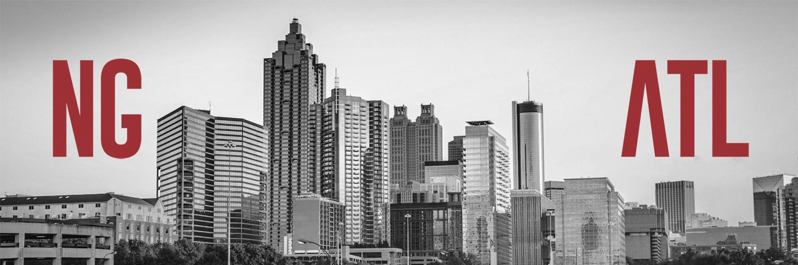

<nav>
  <div class="top-nav">
    <div class="container">
      <div class="social">
        <a href="https://twitter.com/ngAtlConf" target="_blank">
          <i class="fa fa-facebook"></i>
        </a>
        <a href="https://twitter.com/ngAtlConf" target="_blank">
          <i class="fa fa-twitter"></i>
        </a>
        <a href="https://twitter.com/ngAtlConf" target="_blank">
          <i class="fa fa-instagram"></i>
        </a>
      </div>
    </div>
  </div>
  <div class="primary-nav"></div>
</nav>
<div class="hero-img">
  <a routerLink="">
    
  </a>
</div>
<div class="container-fluid">
  <router-outlet></router-outlet>
</div>